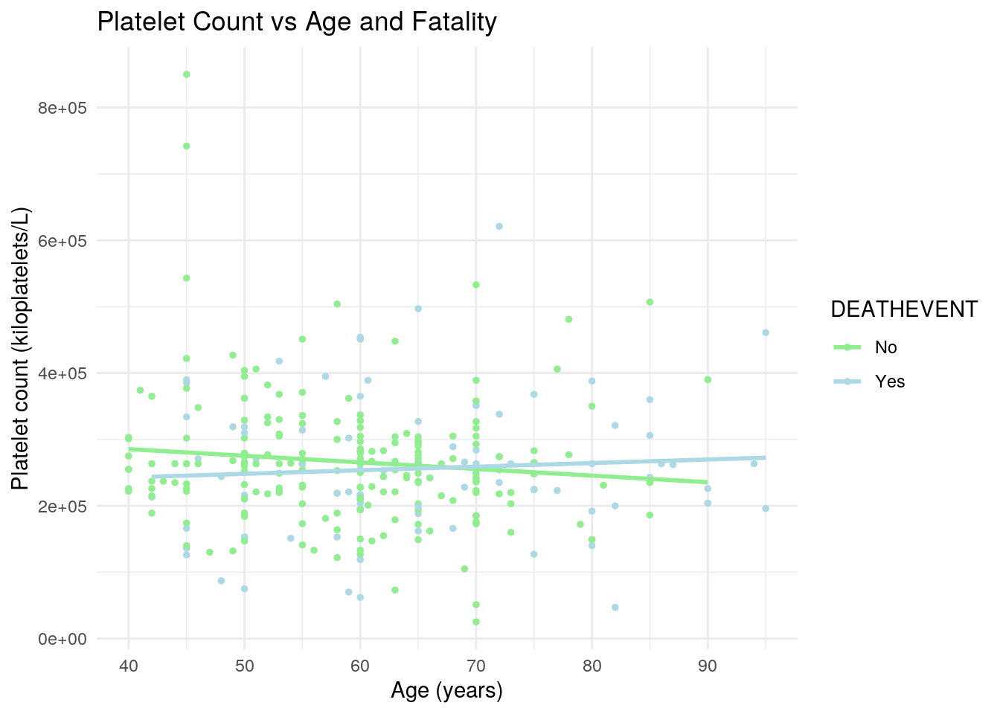
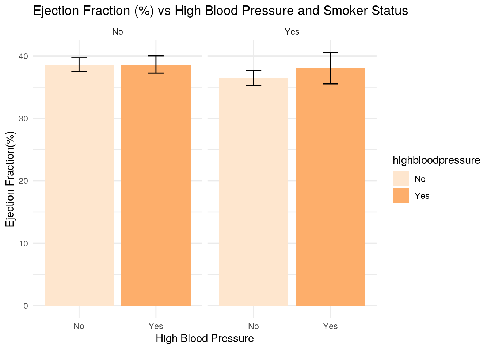
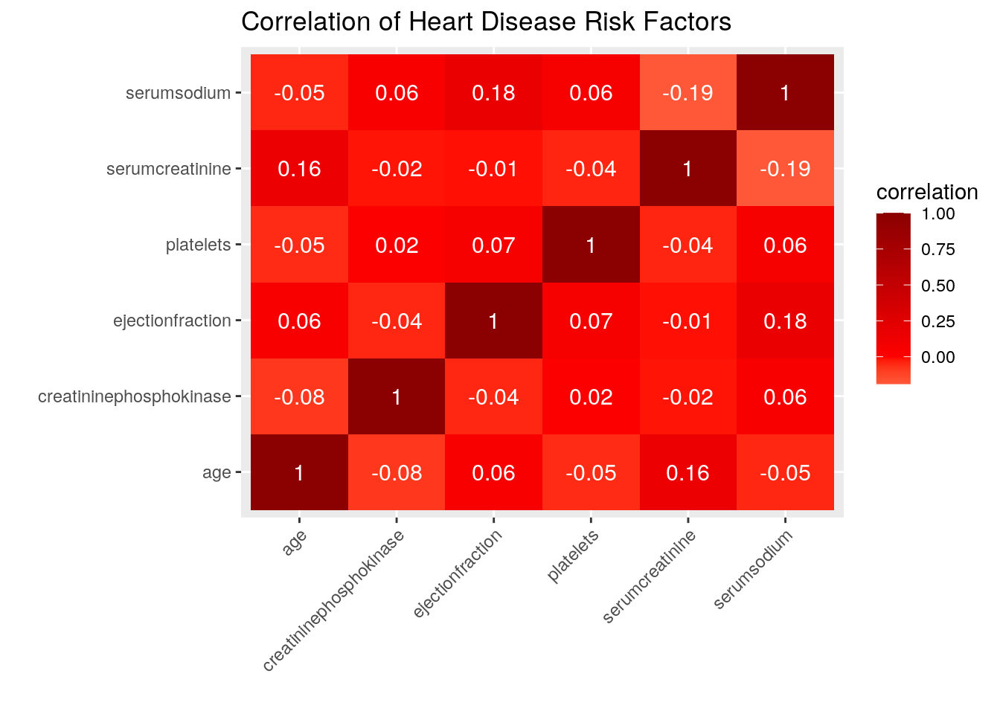
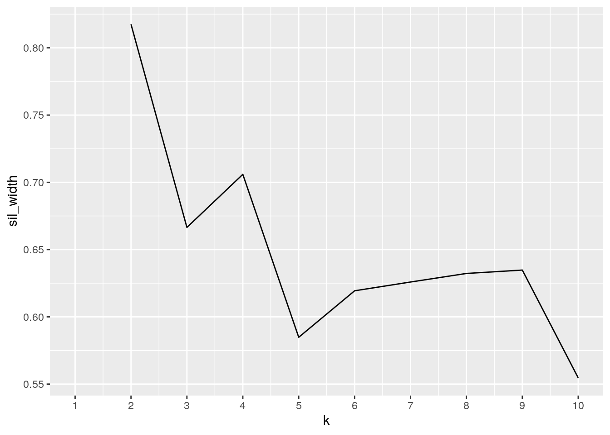
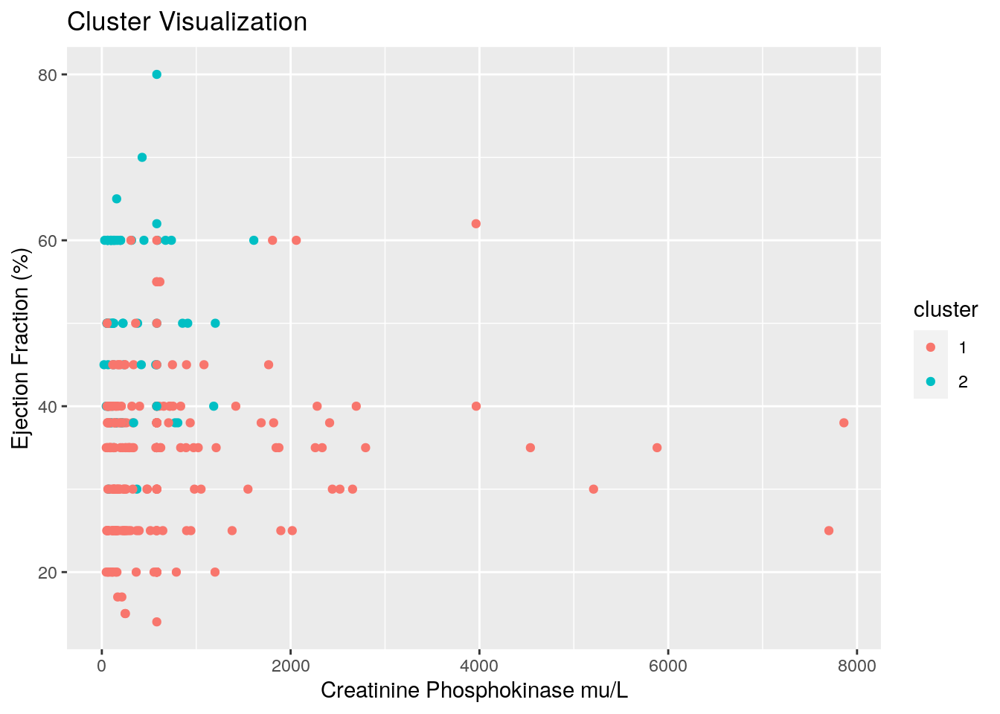
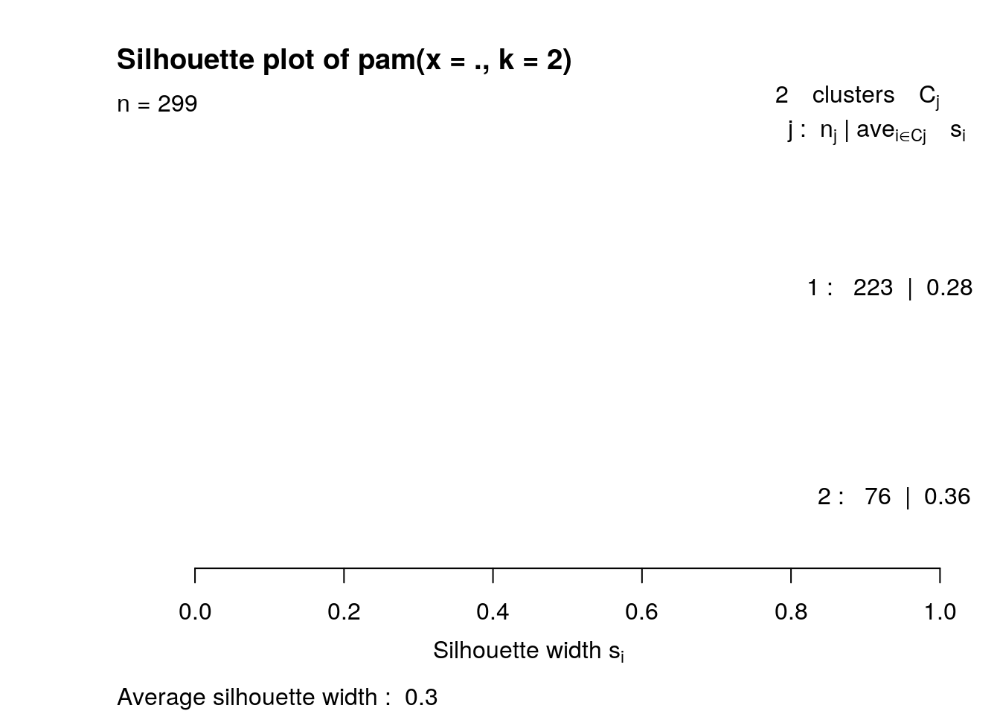

Title: Exploration of the relationship between heart failure and potential risk factors.
This project will explore the incidence of death due to heart failure and potential associations with risk factors, such as age, diabetes, or high blood pressure. This dataset was acquired from kaggle.com. The dataset contains various clinically assessed risk factors, such as smoker status and age. This data exploration is of interest to me, personally, because many members of my family suffer from cardiovascular disease. Hopefully, this project will allow me to gain better insight into the predictors of heart failure and potentially lead to lifestyle changes for myself and my family.
Before beginning analysis, minor changes were made to the original dataset in order to make analysis run more smoothly. The initial dataset did not have a patient ID variable. This was inputted manually in Excel before uploading the dataset into R. There were two variables in this dataset that are not of interest to my project due to their lack of clear definition. After searching through the database, I could not properly interpret the data based on the definitions given. For this reason, the "sex" and "time" variables will be removed from the dataset. Finally, the categorical variables in this dataset were coded as "Yes"=1 and "No"=0. For example, the column for diabetes diagnosis has values of "1" or "0", depending on whether or not that particular patient was diabetic. I converted the binary code into "Yes" and "No" so that I could create categorical variables.
library(tidyverse)
library(dplyr)
library(ggplot2)
heart <- read.csv(file = "heart_failure_clinical_records_dataset.csv")
heart <- heart %>% rename_all(function(x) str_replace(x, "_",
"")) %>% rename_all(function(x) str_replace(x, "_", ""))
glimpse(heart)## Rows: 299
## Columns: 14
## $ ID <int> 1, 2, 3, 4, 5, 6, 7, 8, 9, 10, 11, 12, 13, 14…
## $ age <dbl> 75, 55, 65, 50, 65, 90, 75, 60, 65, 80, 75, 6…
## $ anaemia <int> 0, 0, 0, 1, 1, 1, 1, 1, 0, 1, 1, 0, 1, 1, 1, …
## $ creatininephosphokinase <int> 582, 7861, 146, 111, 160, 47, 246, 315, 157, …
## $ diabetes <int> 0, 0, 0, 0, 1, 0, 0, 1, 0, 0, 0, 0, 0, 0, 0, …
## $ ejectionfraction <int> 20, 38, 20, 20, 20, 40, 15, 60, 65, 35, 38, 2…
## $ highbloodpressure <int> 1, 0, 0, 0, 0, 1, 0, 0, 0, 1, 1, 1, 0, 1, 1, …
## $ platelets <dbl> 265000, 263358, 162000, 210000, 327000, 20400…
## $ serumcreatinine <dbl> 1.90, 1.10, 1.30, 1.90, 2.70, 2.10, 1.20, 1.1…
## $ serumsodium <int> 130, 136, 129, 137, 116, 132, 137, 131, 138, …
## $ sex <int> 1, 1, 1, 1, 0, 1, 1, 1, 0, 1, 1, 1, 1, 1, 0, …
## $ smoking <int> 0, 0, 1, 0, 0, 1, 0, 1, 0, 1, 1, 1, 0, 0, 0, …
## $ time <int> 4, 6, 7, 7, 8, 8, 10, 10, 10, 10, 10, 10, 11,…
## $ DEATHEVENT <int> 1, 1, 1, 1, 1, 1, 1, 1, 1, 1, 1, 1, 1, 1, 0, …heart <- heart[-c(11, 13)]
heart <- heart %>% mutate_at(c("anaemia", "diabetes", "highbloodpressure",
"smoking", "DEATHEVENT"), function(x) ifelse(x == 0, "No",
"Yes"))
head(heart)## ID age anaemia creatininephosphokinase diabetes ejectionfraction
## 1 1 75 No 582 No 20
## 2 2 55 No 7861 No 38
## 3 3 65 No 146 No 20
## 4 4 50 Yes 111 No 20
## 5 5 65 Yes 160 Yes 20
## 6 6 90 Yes 47 No 40
## highbloodpressure platelets serumcreatinine serumsodium smoking DEATHEVENT
## 1 Yes 265000 1.9 130 No Yes
## 2 No 263358 1.1 136 No Yes
## 3 No 162000 1.3 129 Yes Yes
## 4 No 210000 1.9 137 No Yes
## 5 No 327000 2.7 116 No Yes
## 6 Yes 204000 2.1 132 Yes YesFortunately, the heart failure prediction dataset was tidy initially. For my project, I will untidy the dataset, specifically by combining the categorical risk factors into one column. There incidence will be determined as a "Yes" or "No" in the new "Incidence" column. The data will then be tidy-ed into a tidy dataset once again.
heart_untidy <- heart %>% pivot_longer(c("anaemia", "diabetes",
"highbloodpressure", "smoking"), names_to = "risk_factor",
values_to = "Incidence")
head(heart_untidy)## # A tibble: 6 x 10
## ID age creatininephosp… ejectionfraction platelets serumcreatinine
## <int> <dbl> <int> <int> <dbl> <dbl>
## 1 1 75 582 20 265000 1.9
## 2 1 75 582 20 265000 1.9
## 3 1 75 582 20 265000 1.9
## 4 1 75 582 20 265000 1.9
## 5 2 55 7861 38 263358. 1.1
## 6 2 55 7861 38 263358. 1.1
## # … with 4 more variables: serumsodium <int>, DEATHEVENT <chr>,
## # risk_factor <chr>, Incidence <chr>heart_tidy <- heart_untidy %>% pivot_wider(names_from = "risk_factor",
values_from = "Incidence")
head(heart_tidy)## # A tibble: 6 x 12
## ID age creatininephosp… ejectionfraction platelets serumcreatinine
## <int> <dbl> <int> <int> <dbl> <dbl>
## 1 1 75 582 20 265000 1.9
## 2 2 55 7861 38 263358. 1.1
## 3 3 65 146 20 162000 1.3
## 4 4 50 111 20 210000 1.9
## 5 5 65 160 20 327000 2.7
## 6 6 90 47 40 204000 2.1
## # … with 6 more variables: serumsodium <int>, DEATHEVENT <chr>, anaemia <chr>,
## # diabetes <chr>, highbloodpressure <chr>, smoking <chr>For this project, I will manually separate my dataset with the common variable "ID". I will perform a full join, using "ID" to rejoin the separated datasets.
heart_part1 <- heart %>% select("ID", 2:6)
head(heart_part1)## ID age anaemia creatininephosphokinase diabetes ejectionfraction
## 1 1 75 No 582 No 20
## 2 2 55 No 7861 No 38
## 3 3 65 No 146 No 20
## 4 4 50 Yes 111 No 20
## 5 5 65 Yes 160 Yes 20
## 6 6 90 Yes 47 No 40heart_part2 <- heart %>% select("ID", 7:12)
head(heart_part2)## ID highbloodpressure platelets serumcreatinine serumsodium smoking DEATHEVENT
## 1 1 Yes 265000 1.9 130 No Yes
## 2 2 No 263358 1.1 136 No Yes
## 3 3 No 162000 1.3 129 Yes Yes
## 4 4 No 210000 1.9 137 No Yes
## 5 5 No 327000 2.7 116 No Yes
## 6 6 Yes 204000 2.1 132 Yes Yesheartnew <- full_join(heart_part1, heart_part2, by = "ID")
head(heartnew)## ID age anaemia creatininephosphokinase diabetes ejectionfraction
## 1 1 75 No 582 No 20
## 2 2 55 No 7861 No 38
## 3 3 65 No 146 No 20
## 4 4 50 Yes 111 No 20
## 5 5 65 Yes 160 Yes 20
## 6 6 90 Yes 47 No 40
## highbloodpressure platelets serumcreatinine serumsodium smoking DEATHEVENT
## 1 Yes 265000 1.9 130 No Yes
## 2 No 263358 1.1 136 No Yes
## 3 No 162000 1.3 129 Yes Yes
## 4 No 210000 1.9 137 No Yes
## 5 No 327000 2.7 116 No Yes
## 6 Yes 204000 2.1 132 Yes Yesheart %>% group_by(DEATHEVENT) %>% select(-ID) %>% summarize_if(is.numeric,
c(mean = mean, sd = sd, min = min, max = max)) %>% pivot_longer(-DEATHEVENT) %>%
separate(name, into = c("riskfactor", "stat"))## # A tibble: 48 x 4
## DEATHEVENT riskfactor stat value
## <chr> <chr> <chr> <dbl>
## 1 No age mean 58.8
## 2 No creatininephosphokinase mean 540.
## 3 No ejectionfraction mean 40.3
## 4 No platelets mean 266657.
## 5 No serumcreatinine mean 1.18
## 6 No serumsodium mean 137.
## 7 No age sd 10.6
## 8 No creatininephosphokinase sd 754.
## 9 No ejectionfraction sd 10.9
## 10 No platelets sd 97531.
## # … with 38 more rowsheart %>% group_by(highbloodpressure) %>% select(-ID) %>% summarize_if(is.numeric,
c(mean = mean, sd = sd, min = min, max = max)) %>% pivot_longer(-highbloodpressure) %>%
separate(name, into = c("riskfactor", "stat"))## # A tibble: 48 x 4
## highbloodpressure riskfactor stat value
## <chr> <chr> <chr> <dbl>
## 1 No age mean 60.0
## 2 No creatininephosphokinase mean 632.
## 3 No ejectionfraction mean 37.9
## 4 No platelets mean 259769.
## 5 No serumcreatinine mean 1.40
## 6 No serumsodium mean 137.
## 7 No age sd 12.0
## 8 No creatininephosphokinase sd 1019.
## 9 No ejectionfraction sd 11.5
## 10 No platelets sd 104292.
## # … with 38 more rowsheartcprisk <- heart %>% mutate(creatininephosphokinaserisk = case_when(creatininephosphokinase >
120 ~ "abnormal", creatininephosphokinase < 120 ~ "normal"))
heartcprisk %>% select(diabetes, age, creatininephosphokinase,
creatininephosphokinaserisk) %>% filter(diabetes == "Yes") %>%
arrange(creatininephosphokinase) %>% count(creatininephosphokinaserisk)## creatininephosphokinaserisk n
## 1 abnormal 98
## 2 normal 2798/(98 + 27)## [1] 0.784heartcprisk %>% select(diabetes, age, creatininephosphokinase,
creatininephosphokinaserisk) %>% filter(diabetes == "No") %>%
arrange(creatininephosphokinase) %>% count(creatininephosphokinaserisk)## creatininephosphokinaserisk n
## 1 abnormal 124
## 2 normal 50124/(124 + 50)## [1] 0.7126437heartcprisk %>% filter(creatininephosphokinaserisk == "abnormal") %>%
summarize(mean(creatininephosphokinase))## mean(creatininephosphokinase)
## 1 756.4459The data revels that the average age for those who died as a result of heart failure was 65 and those who did not was 58. Perhaps this suggests that older age groups, along with other risk factors, are more likely to die due to heart disease. This can be supported by the finding that the mean values for creatinine phosphokinase levels, ejection fraction, and platelet count, are at abnormal levels for those who suffered a death event. Similar findings are presented when the data is grouped based on high blood pressure status. The mean age is greater for those suffering from high blood pressure, suggesting age as a risk factor. However, this does not carry over to creatinine phosphokinase levels, which are lower in the high blood pressure group. The mean ejection fractior is higher in the high blood pressure group, which is expected given the physiology of the heart.
A new variable was created in order to assess the risk level posed by creatinine phoshokinase levels. This was based of the normal creatinine phoshokinase level, less than 120 mu/L. The average creatinine phosphokinase level for those in the abnormal group was 756 mu/L. Many people in my family suffer from diabetes, so I chose to assess the abnormality of creatinine phosphokinase levels between those who were or were not diabetic. Not surprisingly, there was a higher percentage of patients with abnormal creatinine phosphotase levels that were diabetic(78%) than those who were non-diabetic (71%).ggplot(heart, aes(x = age, y = platelets, color = DEATHEVENT)) +
geom_point(size = 1) + scale_color_manual(values = c("Light Green",
"Light Blue")) + ggtitle("Platelet Count vs Age and Fatality") +
geom_smooth(method = "lm", se = F) + ylab("Platelet count (kiloplatelets/L)") +
xlab("Age (years)") + scale_x_continuous(breaks = seq(from = 40,
to = 95, by = 10)) + theme_minimal()
ggplot(heart, aes(x = highbloodpressure, y = ejectionfraction,
fill = highbloodpressure)) + geom_bar(aes(y = ejectionfraction),
stat = "summary", fun = mean) + geom_errorbar(stat = "summary",
aes(x = highbloodpressure, y = ejectionfraction), width = 0.2) +
ggtitle("Ejection Fraction (%) vs High Blood Pressure and Smoker Status ") +
ylab("Ejection Fraction(%)") + xlab("High Blood Pressure") +
scale_fill_brewer(palette = "Oranges") + facet_wrap(~smoking) +
theme_minimal()
heart %>% select_if(is.numeric) %>% select(-ID) %>% cor %>% as.data.frame %>%
rownames_to_column("varA") %>% pivot_longer(-1, names_to = "varB",
values_to = "correlation") %>% ggplot(aes(varA, varB, fill = correlation)) +
geom_tile() + ggtitle("Correlation of Heart Disease Risk Factors") +
scale_fill_gradient2(low = "white", mid = "red", high = "dark red") +
geom_text(aes(label = round(correlation, 2)), color = "white",
size = 4) + xlab("") + ylab("") + theme(axis.text.x = element_text(angle = 45,
hjust = 1)) The first graph explores the relationship between age and platelet count, whether or not a patient passed away due to heart disease. As age increases for patients who are living, the platelet count trends downward. As age increases for patients that ultimately pass away due to heart disease, platelet counts increase. An increased platelet count increases the likelihood of forming a blood clot. This is consistent with the findings in the wrangling section, as age is a risk factor for dying of heart disease. The bar graph explores the relationship between ejection fraction and high blood pressure in smokers and non smokers. In the non-smoking group, the ejection rate between those with and without high blood pressure was virtually the same. However, in the smoking group, the ejection rate was slightly higher for those with high blood pressure. It appears that this is not a significant difference. This differs from what I expected to find, which was that the ejection rate in smokers would be lower due to the vasoconstrictive effects of smoking compounded with high blood pressure. Finally, I created a correlation heat map to assess the correlation of incidence between two different risk factors. This map reveals that there are very weak correlations between the numeric variables. No definitive conclusions can be drawn from this map.
library(cluster)
pam_dat <- heart %>% select(ejectionfraction, creatininephosphokinase,
age)
sil_width <- vector()
for (i in 2:10) {
pam_fit <- pam(pam_dat, k = i)
sil_width[i] <- pam_fit$silinfo$avg.width
}
ggplot() + geom_line(aes(x = 1:10, y = sil_width)) + scale_x_continuous(name = "k",
breaks = 1:10)
pam1 <- pam_dat %>% scale %>% pam(k = 2)
pam1## Medoids:
## ID ejectionfraction creatininephosphokinase age
## [1,] 72 -0.2605537 0.000165451 -0.2382462
## [2,] 44 1.0068904 -0.468767542 0.9387378
## Clustering vector:
## [1] 1 1 1 1 1 2 1 2 2 2 2 1 1 1 1 2 2 1 1 1 1 1 1 2 1 2 2 2 1 2 2 2 1 1 2 1 2
## [38] 2 1 1 1 1 2 2 2 1 1 1 1 1 1 1 1 2 1 2 1 1 1 1 1 1 1 1 2 1 1 1 1 1 1 1 1 2
## [75] 1 1 2 1 2 1 2 2 1 2 1 1 1 2 1 1 2 1 1 1 1 2 1 2 1 1
## [ reached getOption("max.print") -- omitted 199 entries ]
## Objective function:
## build swap
## 1.295640 1.256373
##
## Available components:
## [1] "medoids" "id.med" "clustering" "objective" "isolation"
## [6] "clusinfo" "silinfo" "diss" "call" "data"finalpam <- pam_dat %>% mutate(cluster = as.factor(pam1$clustering))
ggplot(finalpam, aes(x = creatininephosphokinase, y = ejectionfraction,
color = cluster)) + geom_point() + ggtitle("Cluster Visualization") +
xlab("Creatinine Phosphokinase mu/L") + ylab("Ejection Fraction (%)")
heart %>% slice(pam1$id.med)## ID age anaemia creatininephosphokinase diabetes ejectionfraction
## 1 72 58 No 582 Yes 35
## 2 44 72 No 127 Yes 50
## highbloodpressure platelets serumcreatinine serumsodium smoking DEATHEVENT
## 1 No 122000 0.9 139 Yes No
## 2 Yes 218000 1.0 134 No Noplot(pam1, which = 2) I decided to use PAM in order to conduct a cluster analysis. I chose the variables ejectionfraction, creatininephosphokinase, and age. These are risk factors that I have explored previously and I have found that age increases the occurence of other risk factors of heart disease. I chose to use 2 clusters, as is supported by the findings of the silhouette plot. The silhouette width is .3, which indicates that the structure is weak and could be artificial. I continued with k=2 and plotted the two different clusters in a scatter plot. Not surprisingly, this did not produce exciting results. There was not a great distance between the clusters. Within the clusters, the datapoints were not tight together. The two mediods differed from each other in most respects, but both were diabetic. Due to the results of the silhouette width, it was not surprising that there were no signficant findings in my cluster analysis. Perhaps this is due to my variables of choice. Future analysis can include a variable for a risk-factor score. That way, we can compare risk factor readings to a specific risk-factor score instead of risk-factors compared to each other.